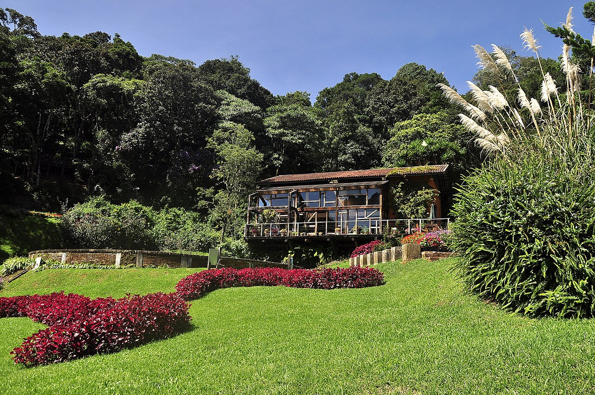

Como o sistema Agropóllen integra produção e natureza

O Agropóllen é um sistema que integra agricultura, preservação ambiental e criação de abelhas em um único modelo sustentável.
Ele combina Sistemas Agroflorestais, meliponicultura e o uso consciente da Reserva Legal para criar uma propriedade equilibrada e produtiva.
As abelhas são responsáveis por aumentar a produtividade das lavouras por meio da polinização, enquanto os SAFs melhoram o solo e reduzem o impacto ambiental.
As áreas degradadas podem ser recuperadas e reintegradas ao sistema produtivo, sem necessidade de abandono.
Isso reduz custos de produção, aumenta a biodiversidade e melhora a qualidade dos alimentos produzidos.
Além disso, o sistema gera novas fontes de renda, como mel e produtos derivados das abelhas.
No final, o Agropóllen mostra que é possível produzir, conservar e lucrar ao mesmo tempo, criando um modelo de agricultura mais inteligente, sustentável e adaptado à realidade do Paraná.
De acordo com os boletins de Integração Lavoura-Pecuária-Floresta (ILPF) e Sistemas Agroecológicos da Embrapa (2023), a integração harmoniosa de múltiplos ecossistemas produtivos reduz in até 40% a necessidade de insumos externos, potencializando o controle biológico de pragas e doenças. (Fonte: EMBRAPA, 2023)